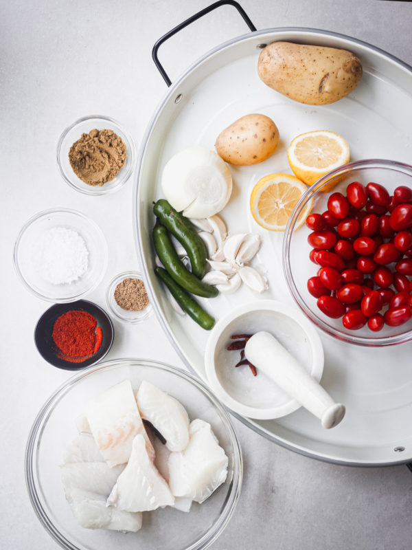
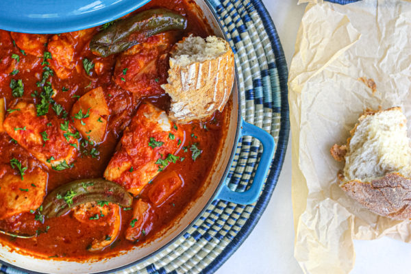

Libyan Haraimi

Description
Libyan Haraimi is a mediterranean fish stew that is made up of a rich spicy tomato sauce, fish steaks, potatoes ( optional) and seasoned with a delicious spice blend.
Ingredients
Fish Stew
- 3 tablespoons olive oil
- 1/2 thinly sliced onion
- 3 large tomatoes pureed
- 2 Jalapenos
- 4 minced garlic
- 1 medium cubbed potatoes ( optional)
- salt to taste
- black pepper to taste
- 1/2 teaspoon cayenne pepper
- 1/2 teaspoon caraway powder
- 1 teaspoon cumin powder
- 1/2 teaspoon paprika
- 2 tablespoons tomato paste
- 1 cup water
- 2 pounds Cod or halibut fish fillets
-
2 pounds Cod or halibut fish fillets
- ( cut them into 6 portions)
Instructions
- In a bowl, add the fish, lemon juice, cumin powder, salt and mix. Let the fish marinate for 10 - 15 minutes.
- In a medium pan on medium / low heat, add the olive oil and sliced onion. Cover the pan and allow the onions to cook for 4 minutes
- Then add the spices ( caraway, cumin, cayenne and paprika powder) to the onions and stir. Add the jalapeños and cook for 2 minutes.
- n a separate bowl, add the tomato puree, tomato paste, minced garlic, spices and mix.
- Add the tomato mixture into the pan and stir. Let the mixture to come to a very light simmer and then add the hot water and then add the potatoes. Cover the pan and let the potatoes cook ( 10 minutes depends on how large you cut the potatoes)
- Once the potatoes have cooked through, place the fish fillet one at a time and cover the pan and allow the fish to cook. This will take anywhere between 8-12 minutes. Again it depends on how large and thick your fillet is.

- Once the fish has cooked through, remove the fish from the pan and let it cool for a few minutes. Then add the fish to the tomato mixture and stir. Cover the pan and let the mixture cook for 10-15 minutes. Stir occasionally.
